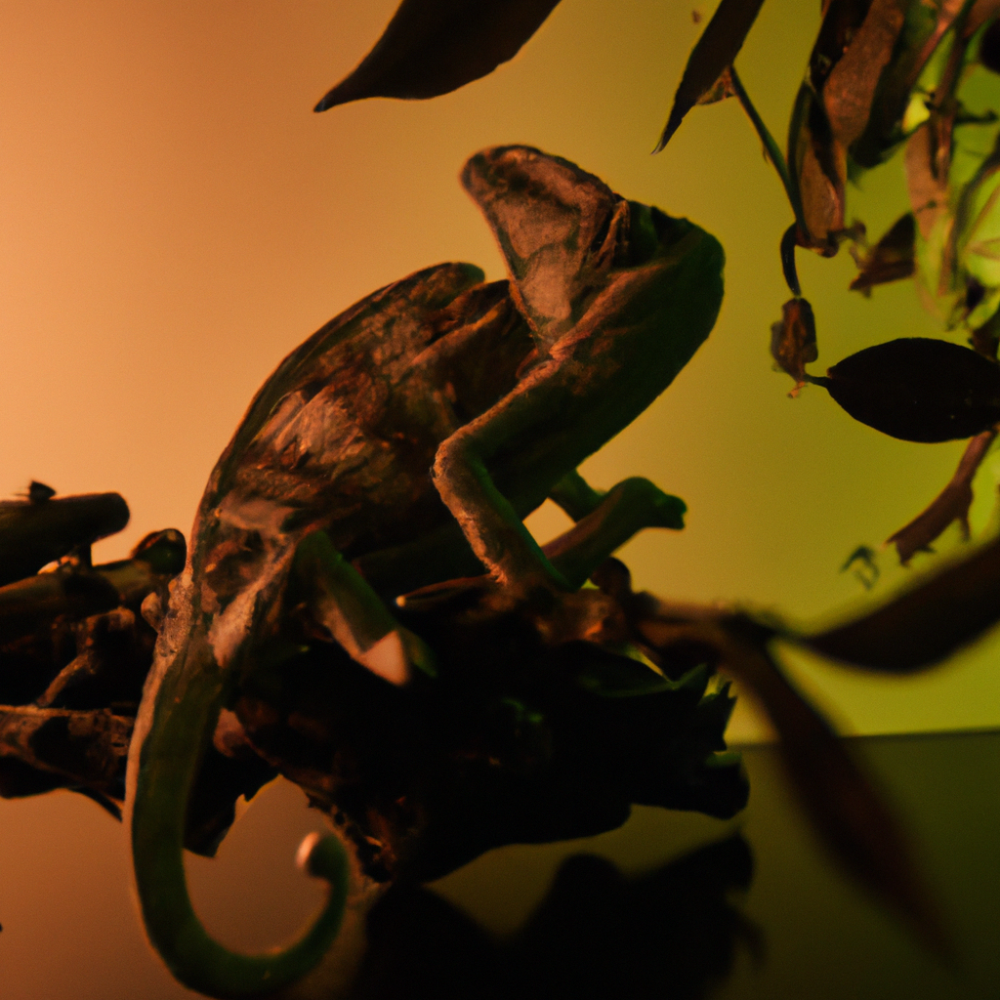

How chameleons feel and live in a small smoky office
Chameleons are very sensitive animals that need specific environmental conditions to live and thrive. One of the most difficult places for a chameleon is a small, smoky office room. In such an environment, these animals can suffer from various health conditions and even death if left unattended for too long.
Chameleons need high humidity levels (at least 70%) and temperatures between 75-80°F (24-27°C) to stay healthy. The air in a small smoky office room often does not meet these requirements, so chameleons cannot survive in such an environment without proper care from their owners. Smoke from cigarettes or burning paper can also affect the quality of air around the chameleon, causing respiratory issues like coughing or sneezing which can lead to other health complications if not treated promptly.
Also, since they are cold-blooded animals they rely on external sources of heat like basking spots or heating lamps to keep their body warm enough so it can function properly. In a small smoky office room there may be insufficient sources of heat available for them leading to malnourishment which can cause serious problems over time if not addressed quickly by providing supplemental heating elements around the enclosure or moving your pet into an appropriate living space with more suitable temperature and humidity levels.
Finally, another problem that arises when keeping chameleons in a small smoky office is that they may be exposed to other pets like cats or dogs which could potentially harm them due to their fragile nature and lack of defensive capabilities against larger predators like those mentioned before; this is why it’s important for owners who keep their pets in such environments take extra precautions when introducing new animals into the same area as your pet chameleon(s).
To conclude, although keeping pet chameleons in a small smoky office isn’t ideal; with proper care and attention given by owners as well as ensuring adequate temperature/humidity levels within the enclosure along with providing supplemental heating elements where necessary should help reduce any potential health risks posed by living in such environments..